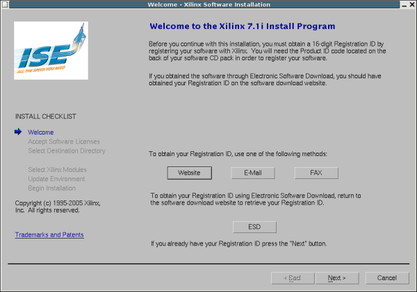
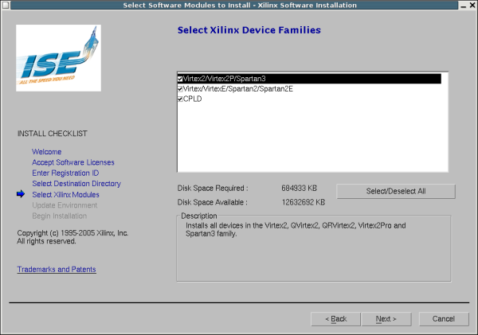
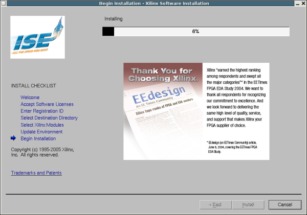
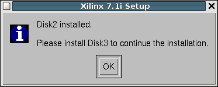

|
Cuaderno técnico 8: (Tutorial) Instalación de ISE 7.1 y EDK 7.1 en una máquina GNU/Linux con Debian/Sarge |
Sacar el CD 1 y montar el CD 2. Montarlo como root, igual que se hizo con el CD 1, para asegurarse que se tienen permisos de ejecución. Entrar en el CD y ejecutar el setup:
|
montu:/# cd /cdrom montu:/cdrom# ./setup Select the installation type: 1) 32-bit 2) 64-bit |
Para la máquina en la que estoy instalando selecciono la opción de 32-bits (1). Aparecerán los siguientes mensajes en el terminal:
|
/cdrom/platform/lin/bin/lin Wind/U Error (294): Unable to install Wind/U ini file (/cdrom/platform/lin/data/WindU). See the Wind/U manual for more details on the “.WindU” file and the “WINDU” environment variable. |
No tienen importancia. Al cabo de unos segundos aparecerá la pantalla de bienvenida al programa de instalación del CD 2
|
 |
Pinchamos en Next y nos aparecerá la pantalla de las licencias, muy parecida a la del CD 1. (Los pantallazos no los incluyo).
Insertar el número de registro (Tampoco incluyo un pantallazo).
Indicamos el directorio. Ponemos el mismo que con el CD 1: /usr/local/Xilinx
Seleccionar los módulos. Aparece una única opción que hay que seleccionar (FPGA/CPLD Devices)
Seleccionar la familia de Dispositivos que se quieren instalar. En mi caso pongo todos:
|
 |
Selecionar las variables de entorno. Igual que con el CD 1.
Confirmación. Igual que con el CD 1. Le damos a Install y comienza la instalación
|
 |
Vuelve a preguntar por la actualización. Yo pincho en NO
Instalación del CD 2 terminada:
|
 |
Página 2 de 3